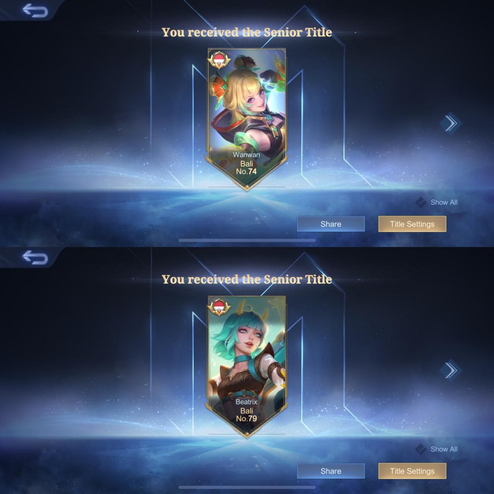
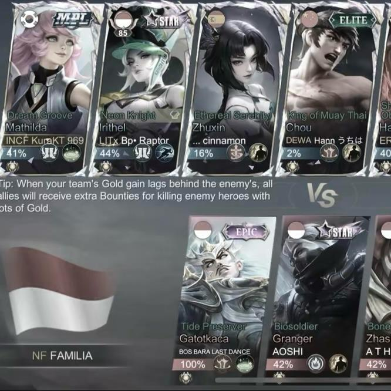
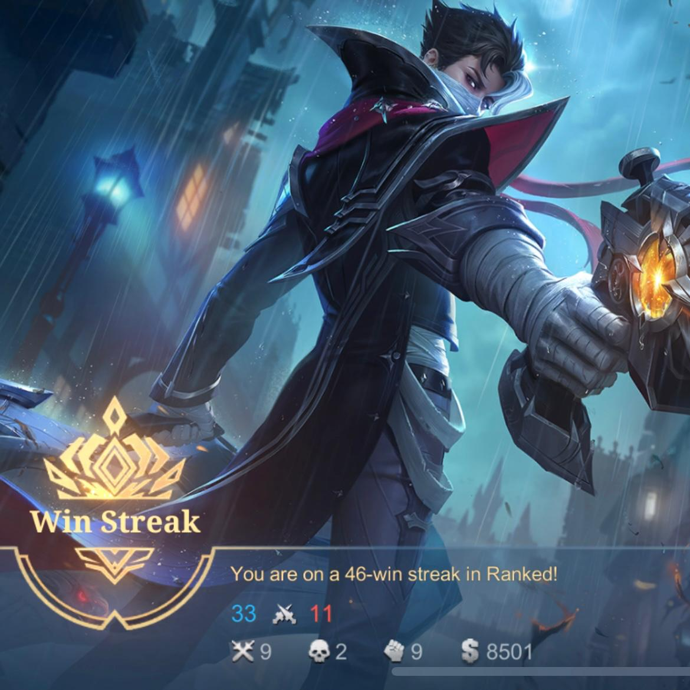

About Kura
Kura is a soft-spoken and slightly cunning arctic fox who dreams of becoming a writer like Fyodor Dostoevsky. He also hopes to one day create his own furry visual novel He likes reading, playing games, playing musical instruments, and being in a band. He is always curious about languages, and now he is fluent in Indonesian, English, and German..
Social Media
Game Gallery
He is truly skilled at playing Mobile Legends, but he's just as good at other games like Free Fire, PUBG, Roblox, Valorant, Genshin Impact, Honkai: Star Rail, Zenless Zone Zero, and others.!


